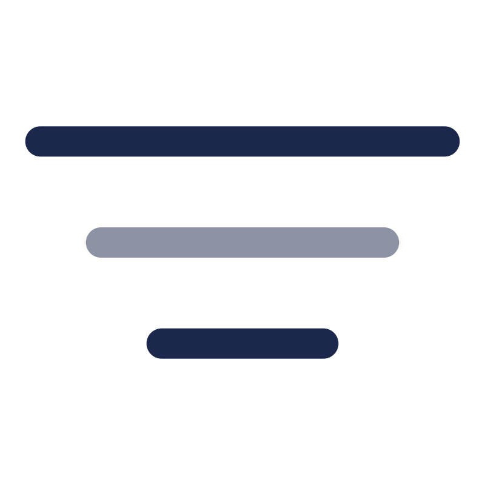

<div class="wrapper">
  <div class="buttons">
    <button
      (click)="taskInformationService.handleSaveData()"
      title="Сохранить данные в localStorage"
    >
      
    </button>
    <button
      (click)="taskInformationService.handleGetData()"
      title="Получить данные из localStorage"
    >
      
    </button>
    <button
      (click)="taskInformationService.isShowModal = true"
      title="Создать задачу"
    >
      
    </button>
    <div class="dropdown">
      <button title="Отсортировать задачи">
        
      </button>
      <div class="contentSort">
        <button (click)="taskInformationService.handleSort('priority')">
          Приоритет
        </button>

        <button (click)="taskInformationService.handleSort('status')">
          Статус
        </button>

        <button (click)="taskInformationService.handleSort('deadline')">
          Срок выполнения
        </button>
      </div>
    </div>

    <div class="dropdown">
      <button title="Отфильтровать задачи">
        
      </button>
      <div class="contentFilter">
        <button (click)="taskInformationService.handleFilter('')">
          Без фильтрации
        </button>
        <button (click)="taskInformationService.handleFilter('created')">
          Создана
        </button>
        <button (click)="taskInformationService.handleFilter('in_progress')">
          В работе
        </button>
        <button (click)="taskInformationService.handleFilter('in_review')">
          На ревью
        </button>
        <button (click)="taskInformationService.handleFilter('low')">
          Низкий
        </button>
        <button (click)="taskInformationService.handleFilter('medium')">
          Средний
        </button>
        <button (click)="taskInformationService.handleFilter('high')">
          Высокий
        </button>
      </div>
    </div>
  </div>

  <app-table-block
    cdkDropListGroup
    mixedCdkDragDrop
    [orientation]="'horizontal'"
    [itemList]="taskInformationService.tasks"
    (dropped)="dropped($event)"
  />
</div>
